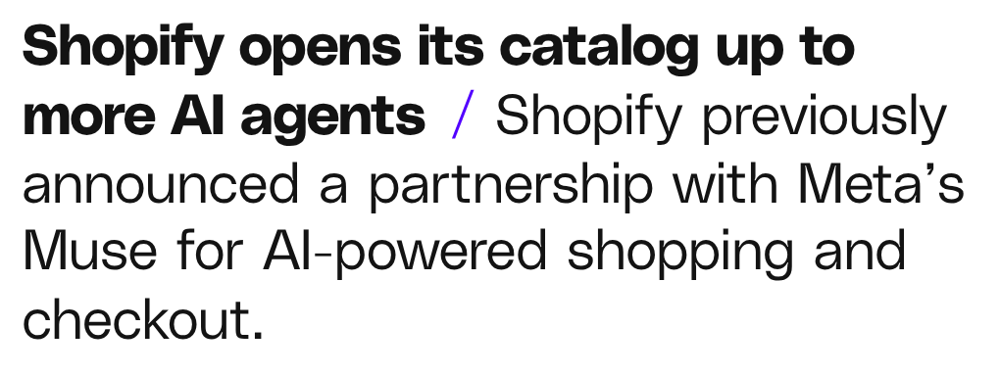

Quelle: The Verge, 13.10.2026
Shopify öffnetProduktkatalogfür KI-Agenten
KI-Assistenten können
Einkaufper Shop Pay vorbereiten
Am EndeKunde schließtselbst ab
BisherStatt Googleund 10 Shops
Passende Produkte gefunden und verglichen
Und jetzt?Was heißt dasfür Händler?
Erster KontaktStartseite→ KI-Chat
PRODUKTDATENWERDEN WICHTIGER
Produktdaten, die stimmen
KI versteht dein Produkt nicht→ SchlechteEmpfehlung
Ganz wichtigNicht ab morgenalle Kunden
Mein FazitNicht erst reagieren,wenn KI-Shopping Alltag ist
Jetzt aufstellenProduktdaten fürMenschen & KI